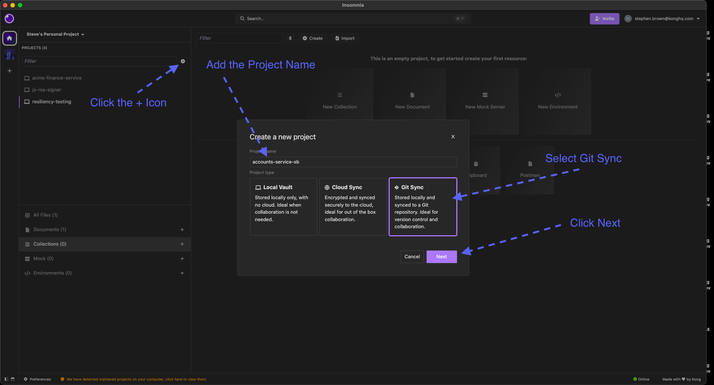
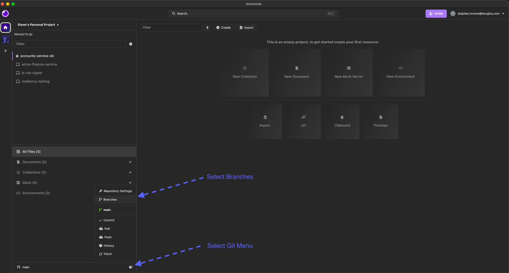
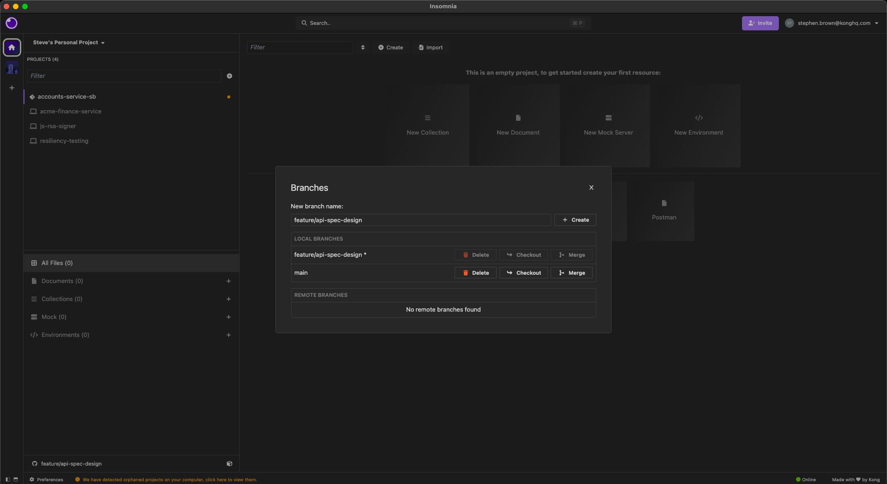

Project Setup and Git Integration
Welcome to the Insomnia Workshop.
In this course, we will work through the design, testing, and automation of an OpenAPI specification using Insomnia and the Inso CLI. All work will be managed via Git from the start, following best practice for collaborative API development.
This first module focuses on setting up your project using Git integration with Insomnia v11.
About This Workshop
You will be working with a Git-backed API specification project for the kong-bank Accounts API. The template repository for this service is hosted on your organisation’s GitHub Enterprise instance and will be referenced throughout this workshop as:
https://github.com/konghq-cx/accounts-service.git
Note:
https://github.com/konghq-cxis the address for the public version of this repository, if your company uses an enterprise git offering then this address will be updated in the course notes.
This repository contains:
- A ready-made implementation of the accounts service, written in Python.
- A docker-compose.yaml file for launching a local version of the service
You will build up a specification and its associated tests for the accounts-service throughout the course.
Before You Begin
Ensure you have the following installed:
- Insomnia v11
- docker and docker-compose
- Access to your company’s GitHub Enterprise
Step 1: Create Your Repository from the Template
First, locate the template repository at:
https://github.com/konghq-cx/accounts-service.git
Note:
https://github.com/konghq-cxis the address for the public version of this repository, if your company uses an enterprise git offering then this address will be updated in the course notes.
Create your own repository from this template by:
- Navigate to the template repository in your browser
- Click on “Use this template” or “Generate from template” (the exact wording may vary based on your GitHub Enterprise setup)
- Name your new repository following the convention of adding your initials to the end:
accounts-service-<your-initials>For example: accounts-service-sb if your initials are SB
4. Complete the repository creation process
Now clone your new repository locally:
git clone https://github.com/konghq-cx/accounts-service-<your-initials>.git
cd accounts-service-<your-initials>Note:
https://github.com/konghq-cxis the address for the public version of this repository, if your company uses an enterprise git offering then this address will be updated in the course notes.
Docker Compose Configuration
Inside this repo, you will find a docker-compose.yaml file. This file can be used to start and stop the accounts-service implementation.
While Kong typically recommends a specification-first approach to API development, the goal of this workshop is to focus on exploring and understanding the features of Insomnia. For that reason, having a working API implementation allows us to more effectively demonstrate those features in action. This docker-compose file exposes a working implementation of the accounts-service locally.
The service is started using a Docker Compose file, which looks like the following:
services:
accounts-service:
image: kongcx/accounts-service:latest
container_name: accounts
ports:
- "8081:8081"
restart: unless-stopped
environment:
- LOG_LEVEL=infoAs shown, this configuration is simple — it runs the container image and exposes the service on port 8081.
Please start the service locally:
docker compose up -dImages are hosted in your internal container registry. If you are properly authenticated, the image should pull successfully.
Step 2: Open Insomnia and Sign In
- Open Insomnia v11.
- Sign in using your company email address.
- You will be redirected to your company’s IDP for SSO (OIDC).
- Once authenticated, Insomnia will redirect you back to the application.
Step 3: Add a Git-Backed Project
Insomnia Git projects require an existing remote repository.
To add the accounts-service as a Git-backed project:
- Click the + (plus) button in the Projects panel.
- Choose “Git-Sync”.
- Set name for the project e.g.
accounts-service-<your-initials> - Click next 
- Select the repository from the dropdown when it appears.
- If the repository does not appear you may need to authorise Insomnia to you GitHub organisation
- If this happens you can click on the
Can't find a repository? Configure the Applink, which will take you off to GitHub to authorise Insomnia
- You will see a message indicating that no existing Insomnia files were found:
This is expected as we have not yet added an Insomnia metadata to this project. We will create these the next few modules as we create our
OpenAPIspecification, collections and tests.

How Insomnia Handles Project Metadata (v11)
In Insomnia v11, metadata such as collections, test scripts, environments, and design documents are no longer stored in a separate .insomnia directory.
Instead:
- All metadata is embedded directly into your
OpenAPIspec file. - This simplifies syncing and collaboration using Git.
- Insomnia recognises the spec via OAS annotations and internal metadata blocks.
Step 4: Working with Git in Insomnia
With Git Sync configured, Insomnia provides powerful Git integration features directly within the interface. These tools allow teams to collaborate on shared API projects while maintaining clean version control and visibility into changes.
Git Operations Menu
Use the Git Sync menu (found in the left-hand sidebar) to:

- View commit history
- Create and switch between branches
- Pull updates from collaborators
- Commit and push your own changes
Managing Branches
Maintaining good Git hygiene is essential when working in a collaborative environment. You should:
- Use feature branches to isolate your work
- Create pull requests to support code review and approvals
From the Git menu, you can:
- Create new branches locally
- Switch between local and remote branches
Note: Remote branches will only appear after they’ve been pushed or fetched at least once.

Committing and Pushing Changes
To commit:
- Click the Git dropdown and select Commit
- Inspect the diffs of any proposed changes
- Stage any changes you want to commit
- Enter a meaningful, descriptive commit message
To push:
- Click Push in the same Git menu
- On first push, Insomnia will initialise metadata in the spec file

Pulling Changes from Collaborators
When teammates push updates to the shared repo, you can stay in sync by:
- Opening the Git Sync menu
- Selecting Pull
This will merge their changes into your local project.
Disconnect from Git (if needed)
To sign out of your Git account:
- Go to Setup Git Sync
- Open Repository Settings
- Click Sign Out next to your listed Git account
Additional Project Options
Rename Your Project (Local Only)
- Open Project Settings
- Update the name and click Save
Note: The project name is stored locally and is not synced to Git.
Delete a Git-Backed Project
To delete a project from Insomnia:
- From the project list, open Project Settings
- Click Delete Project
- Confirm deletion
Warning: This removes the project from Insomnia but does not delete the remote Git repository.
Prepare a Feature Branch for Module 02
Now that your Git project is connected, we are ready to set up good Git practices for the rest of the workshop.
Before starting Module 02, create a new Git branch that will hold all your work for that module.
Why? In real-world API development, it’s common to work in isolated feature branches for each change or improvement. In this workshop, we will mirror that practice:
- Each module will have its own branch
- This keeps changes clean, isolated, and easy to manage
- It prepares you for collaborating through pull requests or merge reviews
You only need to do this once at the end of Module 01 — each later module will remind you when it’s time to create a new branch.
Suggested branch name
feature/api-spec-designTo create it:
- Open the Git Sync menu 
- Click Branches
- Type the branch name and click Create 
- Insomnia will automatically switch to the new branch
You’ll now be ready to begin designing and testing the API in the next module.
Summary
You have now:
- Cloned and run the accounts-service locally
- Set up a Git-synced project in Insomnia
- Learned how metadata is stored in Insomnia v11
- Explored Git operations and branch management inside the Insomnia app
You are now ready to begin working on the API specification itself.
Next: Module 2: Designing an API Spec